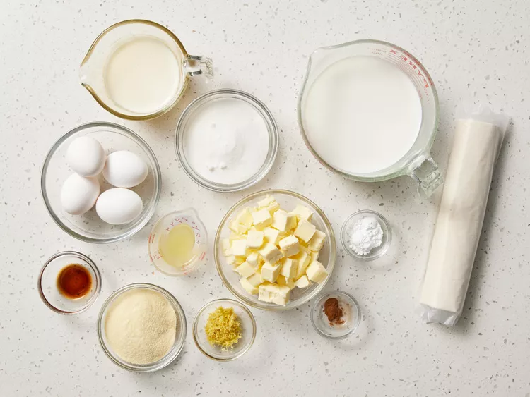
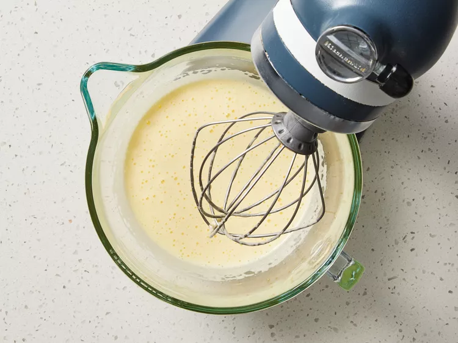
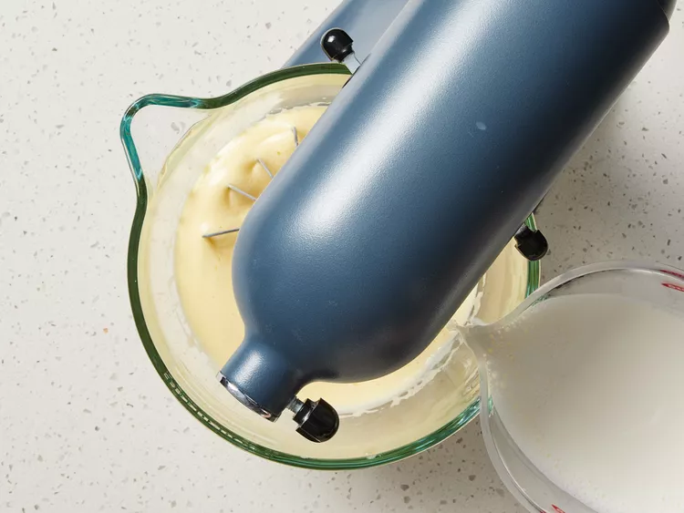
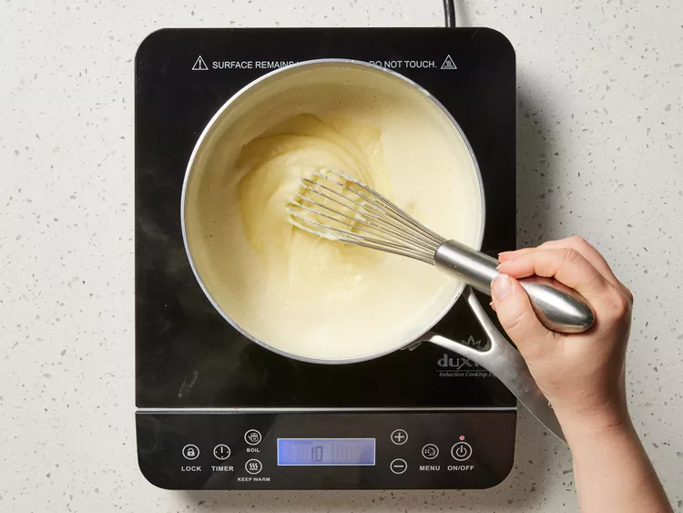
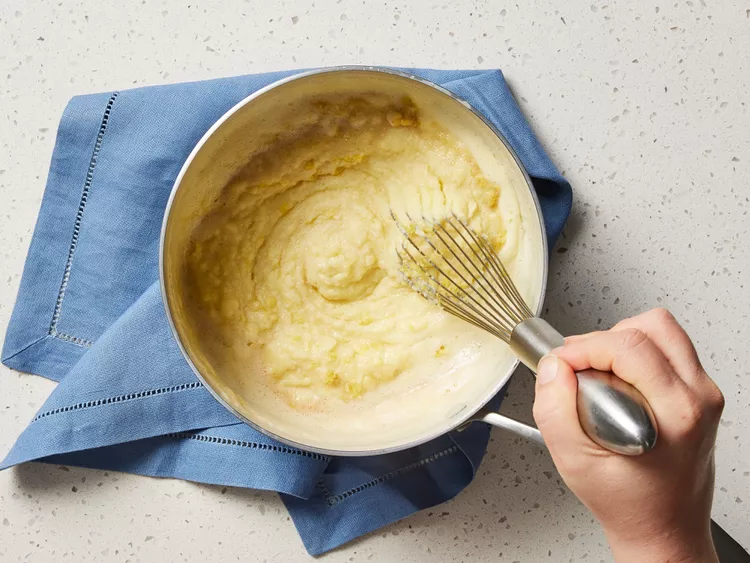
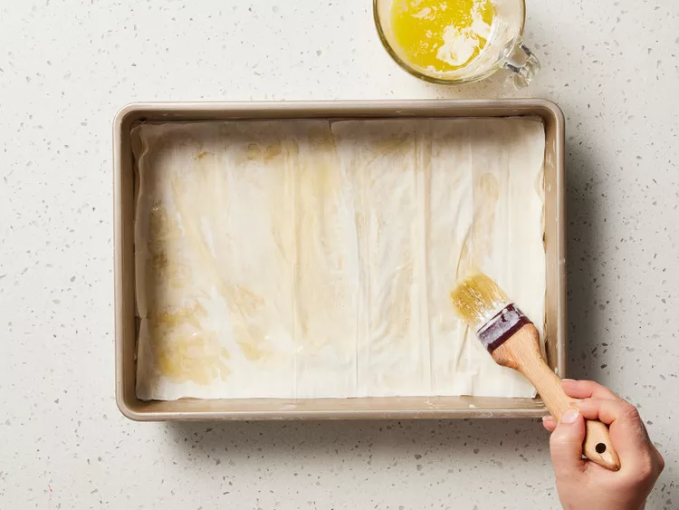
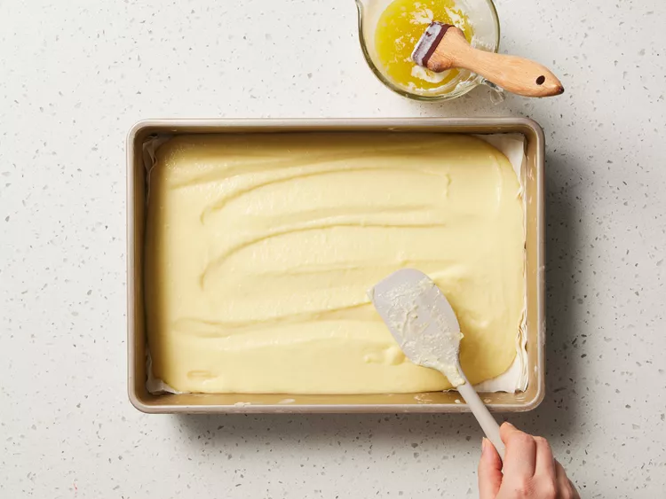
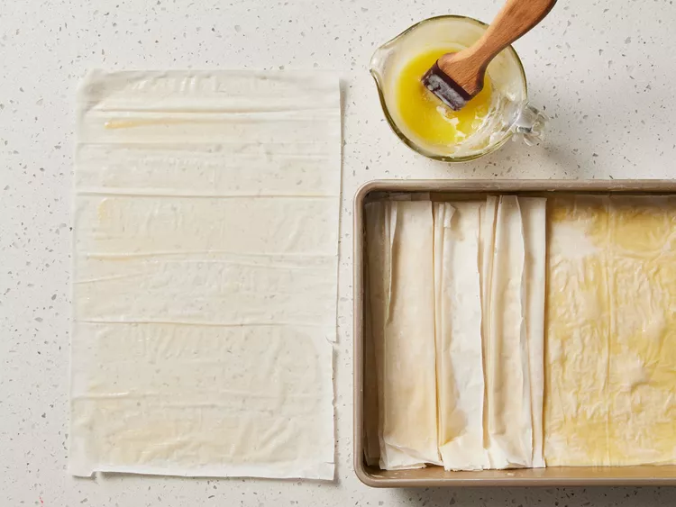
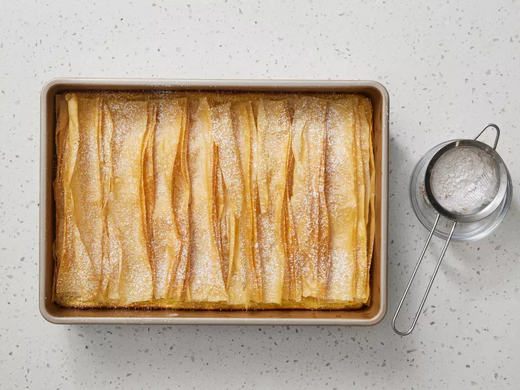

Bougatsa, a Greek pastry that's delicious for breakfast or anytime, has a creamy but sturdy lemon-vanilla custard baked between layers of crisp and flaky phyllo dough.
Crispy and flaky, smooth and filled with a semolina custard—these textures are what make bougatsa so great. There are hints of lemon and vanilla and a sweetness that evens everything out. But what is bougatsa?
Bougatsa is a traditional Greek pastry served often for breakfast or dessert. It’s made by layering sheets of phyllo dough, a thin unleavened dough used in Greek, Balkan, and Middle Eastern cuisine, and filled with a sweet, milky semolina custard.
The recipe also includes eggs, vanilla, sugar, butter, lemon juice and zest as well as powdered sugar and cinnamon as a topping. There really aren’t too many ingredients, which is the beauty of this recipe. There are two main parts to this recipe: preparing the custard, then layering the phyllo dough with the custard. The oven does the rest of the work. Allow the bougatsa to cool slightly before serving. This will help the custard set, and the pastry will cut into slices easier.
“I’ve never had this dish before, and I gotta say, it’s one of the best things I’ve eaten in a while (and I eat a lot),” says recipe tester and developer Liz Mervosh. “It’s just sweet enough to satiate your sweet tooth and also savory from the butter-coated phyllo sweets. Forget your French breakfast pastries, go Greek!”
Gather the ingredients.
Beat eggs with a stand mixer fitted with a whisk attachment on medium speed until foamy, about 1 minute. Add white sugar; beat on medium speed until thick and foamy, 4 to 5 minutes.
Meanwhile, heat milk in a large saucepan over medium-low, stirring occasionally, until milk begins to simmer. With mixer on low speed, slowly pour hot milk into egg mixture, beating until fully combined, about 30 seconds.
Return milk mixture to saucepan. Place saucepan over medium-low heat, and cook, whisking constantly, until mixture begins to simmer and thickens slightly, 3 to 4 minutes. Gradually whisk in semolina flour; cook, stirring constantly, until thickened to a porridge consistency, 1 to 2 minutes.
Remove saucepan from heat. Gradually whisk cold butter, 1 tablespoon at a time, into mixture in saucepan until emulsified, about 2 minutes. Whisk in lemon zest, lemon juice, and vanilla. Let custard stand at room temperature while preparing baking pan, stirring occasionally.
Brush bottom and sides of a nonstick 13- x 9-inch baking pan with about 1 tablespoon of the melted butter. Gently unfold and place phyllo sheets on a clean work surface; cover using a damp clean kitchen towel to keep phyllo moist while you work. Layer 8 phyllo sheets in the prepared baking pan, lightly brushing each sheet with melted butter.
Spread custard over phyllo in an even layer. Top with 2 phyllo sheets, lightly brushing each sheet with melted butter and stretching sheets to cover sides of baking pan.
Working with remaining 8 phyllo sheets, 1 sheet at a time, place phyllo sheet on work surface; lightly brush with melted butter. Starting from 1 short end, fold phyllo sheet accordion-style to create a long strip with 2-inch-wide pleats. Place folded phyllo strip crosswise in baking pan with pleats facing up. Repeat brushing and folding process with remaining 7 phyllo sheets and melted butter, placing strips side by side to completely cover baking pan.
Bake in the preheated oven until pastry is golden brown and crispy, 40 to 45 minutes. Remove from oven, and let bougatsa cool slightly at room temperature for 30 minutes. Dust evenly with confectioner's sugar and cinnamon. Slice into squares, and serve warm or at room temperature.
